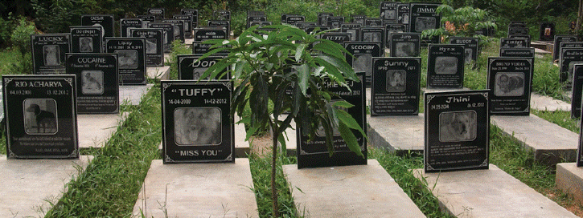
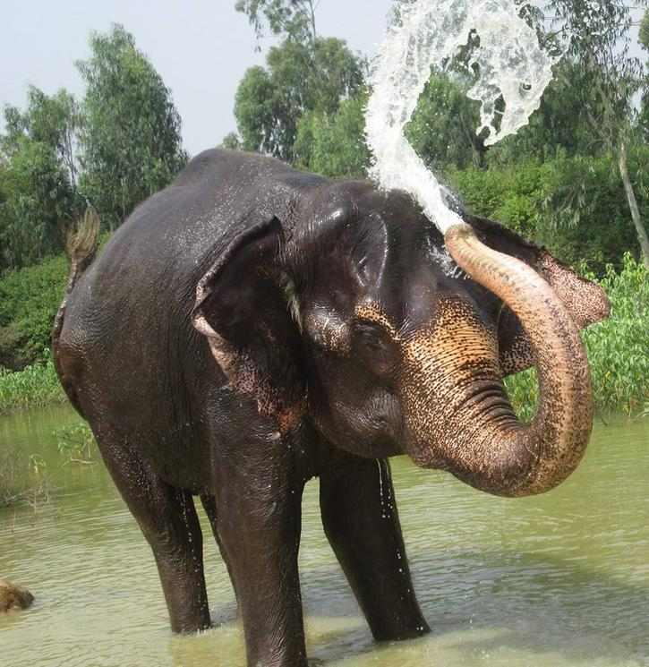
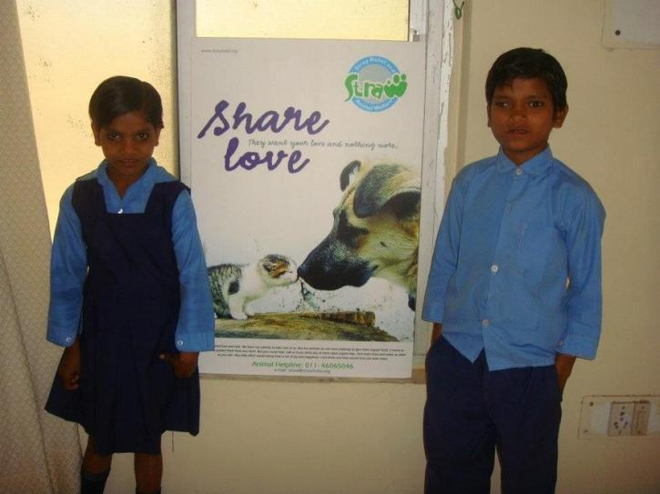
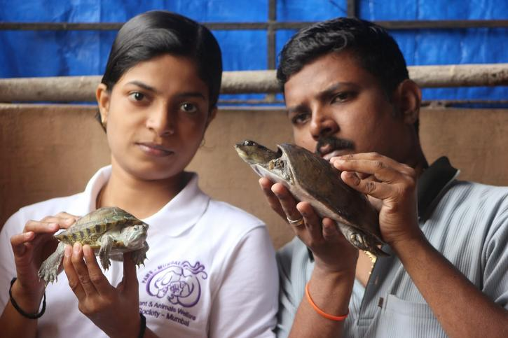
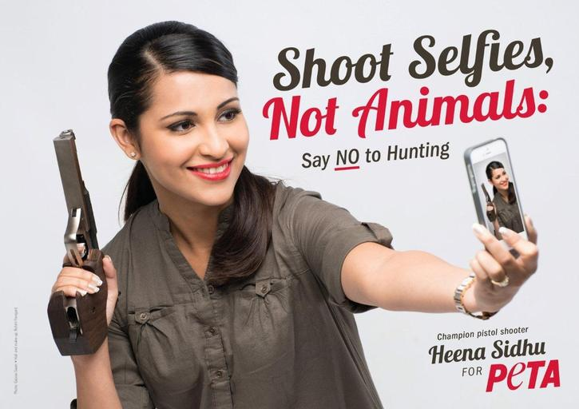

Indian religions have always preached kindness and compassion towards all sentient beings. Even the many
gods of India weren’t without an animal (Lord Krishna with a cow, Lord Shiva with a snake, Lord Vishnu with
an eagle, etc.) Every house used to be a self-sustaining, animal protecting unit. There used to be no need for
any ‘animal welfare organization’ as such.
But, with inevitable change comes new times and tides. Today, animals in India are prime candidates for
exploitation and easy targets for anyone trying to make a quick buck. Cows are starved and milked, chickens
are stuffed in cramped spaces, slaughter animals are made to walk miles to reach the slaughterhouse,
young and healthy animals are killed for leather, and monkeys and elephants are turned into show puppets
and gawked upon. This list knows no bounds.
In light of this, and in spite of economical limitations and indifference of government bodies, a wave of
promising animal welfare and rehabilitation organizations have made a big difference. Here’s how.
1. People for Animals (PFA) Bangalore

Launched in 1996, Bangalore, the goal of People for Animals (PFA), a non profit organization recognized by
Central Zoo Authority (CZA), is to provide professional care to injured, sick, and orphaned urban wildlife, so
that they can eventually return to the wild. Once the rehabilitators feel that the animal can survive
independently in the wild, they are set free. Wild animals that have recovered from injuries, but still require
constant care and attention are transferred to the Lifetime Care Unit at PFA.
PFA works with veterinarians to assess and diagnose a variety of injuries and illnesses. The helpers at PFA
are trained in physical therapy and basic first aid, and also understand the dangers the animal might
present to the rehabilitator. PFA even provides a unique pet cemetery service, which can be availed with
a stipulated donation towards the welfare of the animals.
2. Compassion Unlimited Plus Action (CUPA)

CUPA, founded in 1991, has established 7 successful centres in Bangalore, and has played an active role in
protecting all animals - domestic and wild. Whether it’s stray dog rescues, animal hospitals, geriatric clinics,
trauma centres, wildlife rehabilitation, adoption of abandoned animals, or even animal protection law issues
in the Karnataka High Court, CUPA handles all.
CUPA has a wide range of animal projects that extend throughout India (Andhra Pradesh, Punjab, Gujarat,
Tamil Nadu, Maharashtra, Kerala, Rajasthan, Andamans, etc.) Currently, the organization works closely with
Animal Welfare Board of India (AWBI), to study the welfare of elephants in captivity and to bring about
positive change. A plethora of legal initiatives have also been undertaken by CUPA to improve the conditions
of rural and urban animals.
3. Stray Relief and Animal Welfare (STRAW)

STRAW, recognized by AWBI, seeks to rid our country of the mistreatment and exploitation of animals. Since
its launch in Delhi, in 2002, the non-profit organization is the supporting link between animal welfare groups
and individuals working with animals at the grass root level. STRAW believes it is essential to start educating
children at an early age to be compassionate to all beings. By spreading animal welfare awareness on a
large-scale, STRAW has enabled a number of animal initiatives to see light of day.
STRAW’s primary concern is to reach out and bring comfort and relief to distressed and abandoned animals.
The organization is functional as a result of resources in the form of donations and volunteers. Dedicated
individuals contribute their valuable time, money, and skills towards this cause, making STRAW a successful
organization that raises awareness on animal welfare.
4. Plant and Animal Welfare Society (PAWS)

In 2002, PAWS, an independently run stray-rescue organization, started striving towards animal welfare by
providing care and medical aid to local strays that were injured. Shortly after its launch, a group of
environment-conscious youngsters roamed the streets of Mumbai at night on foot or bike, with a first-aid kit
to cure animals in distress.
Prominent investors soon funded the organization which led to the introduction of a fleet of animal
ambulances, and PAWS inclusion in animal issues on a wider scale. PAWS started work with the Forest
Department of India to rescue and rehabilitate wildlife.
PAWS is among the few animal welfare organizations that is run completely by youngsters, making it its
biggest USP. The organization receives donations from celebrities as well as animal activists from across the
nation.
5. People for the Ethical Treatment of Animals (PETA) India

Launched in 2000, in Mumbai, PETA India operates on PETA’s universal principle: “Animals are not ours to
eat, wear, experiment on, or use for entertainment.”
PETA focuses on bringing about positive changes in areas where animals most suffer, such as food, leather,
research, and entertainment industries. PETA India has raised awareness on the healthy effects of veganism
over meat eating, and how factory farms are poisoning communities. PETA rescues animals used in circuses
(dancing bears and monkeys), movies, cockfighting, horse racing, and the pet trade, as they are more often
than not, severely ill treated. PETA has also rescued many animals being subject to experimentation and
gruesome research.
How Can I help?
In this cruelty-driven, animal-disrespecting, human-dominating world in which we live, these animal welfare
organizations are fuelled by their need to act. In a quest to promote sustainability and environment welfare,
these organizations strive to protect those beings that are already threatened or endangered.
You can support any of these organizations by donating, volunteering, or by becoming a lifetime member of
the organization. Do you know of more organisations as such? Click Here to let us
know about such organisations.